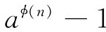
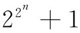
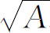
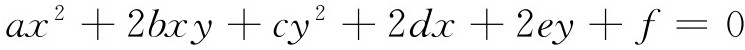
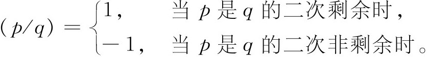
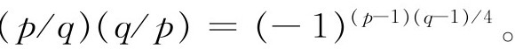

4．数论
数论在18世纪留下来一系列互不关联的成果。在这门学科中最主要的著作是欧拉的《代数指南》（Anleitung zur Algebra，1770年德文版）和勒让德的《数论随笔》（Essai sur la théorie des nombres，1798）。后者的第二版于1808年出版，书名是《数论》（Théorie des nombres），增补了的第三版，分成两卷，于1830年问世。这里要叙述的问题和结果只是已完成的工作中抽出来的一部分小小的样品。
1736年，欧拉证明了费马的小定理(24)，即如果p是一个素数，a和p互素，那么ap-a可以被p整除。18和19两个世纪的其他一些人对这一定理做出了许多种证明。1760年，欧拉引进ø函数，或者叫做n的totient，用来推广这条定理(25)，ø（n）是小于n而与n互素的正整数的个数，所以当n是素数时，ø（n）就等于n-1。［记号ø（n）是高斯引进的。］接着，欧拉证明，如果a和n互素，那么

可以被n整除。
至于费马对xn＋yn＝zn所作的著名猜测，欧拉证明(26)当n＝3和n＝4时，它是正确的；n＝4的情形是已经由弗雷尼克·德贝西（Frénicle de Bessy）证明了的。欧拉的这个工作必须由拉格朗日、勒让德和高斯来完成。接着勒让德对于n＝5证明了这个猜测(27)。我们将要看到，努力去证明费马猜测的历史是很长久的。
费马还曾猜测说（第13章第7节），对于n值的一个不定的集合，由式子

得到的数是素数。对于n＝0，1，2，3和4，这都是对的。但是1732年欧拉证明(28)当n＝5时，这个数不是素数，它的一个因子是641。事实上，现在知道对许多其他的n值，由这个式子得到的数不是素数，但没有发现过一个比4大的数，代入后得到的数是素数。然而，这个式子的重要性在于它重新出现在高斯论正多边形的可作图性的著作中（第31章第2节）。
一个有许多分支的研究课题涉及把各种类型的整数分解成其他类型的整数。费马曾经断言：每一个正整数是不多于四个平方数的和（一个平方数重复出现，比如8＝4＋4是容许的，只要把它出现的次数算上）。在40年以上的长时间里，欧拉一直试图证明这个定理，并做出了一部分结果(29)。拉格朗日(30)用了欧拉的一部分工作，证明了这条定理。不管是欧拉还是拉格朗日，都没有得到一个正整数究竟能表示成几个平方数的和。
在刚才提到的欧拉1754年或1755年的论文和同一本杂志(31)的另一篇文章中，欧拉证明了费马的断言，即每一个形为4n＋1的素数能唯一地分解成两个平方数的和。但是欧拉没有按照递降法去做，这一递降法是费马为这个定理勾画出来的一种方法。在另一篇论文中(32)，欧拉还证明了两个相对互质的平方数之和的每一个因子是两个平方数之和。
华林（1734—1798）在他的《代数沉思录》（Meditationes Algebraicae，1770）中叙述了一条定理，现在称之为“华林定理”，定理说：每一个整数，或者是一个立方数，或者是至多9个立方数之和；另外，每一个整数，或者是一个四次方数，或者是至多19个四次方数之和。他还猜测说每一个正整数可以表示成至多r个k次幂之和，其中r依赖于k。这些定理他都没有证明(33)。
普鲁士派往俄罗斯的一位公使哥德巴赫在1742年6月7日给欧拉的信中，叙述了一个结论，但没有做出证明。他说，每一个偶整数是两个素数之和，每一个奇整数或者是一个素数，或者是三个素数之和。这个断言的第一部分现在称为哥德巴赫猜想，仍然是一个未解决的问题。断言的第二部分其实可以从第一部分推出，因为如果n是奇数，那么从n减去任意一个素数p，n-p就是偶数。
在有关数的分解的某些更专门化的成果中，包含有欧拉证明的x4-y4和x4＋y4不能是平方数的结论(34)。欧拉和拉格朗日证明了费马的许多断言。这些断言大意是说某些素数能用特殊的方式表示出来。例如欧拉证明了(35)形为3n＋1的素数能唯一地表示成形式x2＋3y2。
亲和数和完全数继续吸引着数学家们。欧拉(36)给出了62对亲和数，其中包括已经知道的3对，还有2对是错的。在一篇死后出版的论文中(37)，他还证明了欧几里得定理的逆定理：每一个偶完全数是形为2p-1 （2p-1）的数，其中第二个因子是素数。
威尔逊（John Wilson，1741—1793）是剑桥大学学数学的一个得奖学生，但后来当了律师和法官，他叙述了一条定理，现在仍以他的名字命名：对每一个素数p，量（p-1）！＋1能被p整除；而且，如果这个量能被p整除，那么p就是一个素数。华林在他的《代数沉思录》中公布了这条定理，拉格朗日在1773年证明了它(38)。
求方程x2-Ay2＝1的整数解的问题已经讨论过了（第13章第7节）。欧拉在1732年或1733年的一篇论文中，错误地把它叫做佩尔（Pell）方程，这个名称就这样固定下来了。欧拉开始对这个方程感兴趣，因为他需要用这个方程的解去求ax2＋bx＋c＝y2的整数解。关于后面这个题目他写过几篇文章。1759年，他通过把

表示成一个连分式(39)，给出了一种解佩尔方程的方法。他的想法是：满足方程的x和y的值是使得x/y收敛到（在连分式的意义下）的值。在证明他的方法总能求出解来，而且它的所有的解都是由的连分式展开给出的时候，他失败了。佩尔方程解的存在性是拉格朗日在1766年证明的(40)，在后来的几篇论文中他的证明更简单了(41)。费马曾断言，他能够确定更一般的方程x2-Ay2＝B什么时候有整数解，并说在可解的时候，他就能够把它解出来。这个方程是由拉格朗日在刚才提到的那两篇论文中解出来的。
求一般方程

（其中系数都是整数）的所有整数解的问题也解决了。欧拉给出了解的不完整的类；后来拉格朗日(42)给出了完全的解。在《纪要》(43)的下卷里，他做出了一个更简单的证明。
18世纪中数论的最富于首创精神、可能引出最多成果的发现是二次互反律。它用了二次剩余的概念。这里，我们采用由欧拉在1754年或1755年的一篇论文中引入，后由高斯采用的说法：如果存在一个x，使得x2-p能被q整除，那么就说p是q的二次剩余；如果这样的x不存在，那么就说p是q的二次非剩余。勒让德（1808）发明了一个记号，现在用于表示上面提到的两种情况中的任意一种。这个记号是（p/q），它的意义如下：对于任意数p和任意素数q，

还可以认为，如果p恰好能被q整除，则（p/q）＝0。
在这种记号下，二次互反律说，如果p和q是不同的奇素数，那么

这个意思就是，如果（-1）的指数是偶数，那么p是q的二次剩余，同时q是p的二次剩余；或者哪一个也不是另一个的二次剩余。如果（-1）的指数是奇数，这在p和q是形为4k＋3的素数时出现，那么其中一个素数是另一个素数的二次剩余，但第二个数则不是第一个数的二次剩余。
这一定理的历史须详细说一下。欧拉在1783年的一篇论文(44)中给出了四条定理和第五条总结性的定理，非常清楚地叙述了二次互反律。但是，对这些定理他没有进行证明。这篇论文里的工作注明是从1772年开始做的，而且被编进了甚至更早一些的著作里。克罗内克（Leopold Kronecker）在1875年(45)注意到，这条定理的叙述实际上已包含在欧拉很早以前写的论文中了(46)。但是欧拉的“证明”是建立在计算的基础上的。1785年勒让德在他关于这个课题的论文中独立地宣布了这一定律，虽然他引用了欧拉在《短论》的同一卷里的另一篇文章。他的证明(47)是不完全的。在他的《数论》(48)中他再一次叙述了这条定律，并给了另外一个证明。但是，这一证明仍然是不完全的，因为其中假定了在某一算术级数中存在无穷多个素数。要发现这一定律后面究竟隐藏着什么，从它究竟可以引申出多少含意，这些问题曾经成了1800年后数论研究的关键性课题，而且导致了一些重要的发现，其中的一部分我们将要在后面章节中讨论。
18世纪数论方面的工作是以勒让德1798年的名著《数论》而结束的。虽然这本书包含了一批有趣的结果，有些是数论方面的，也有些是其他方面的（比如椭圆积分方面的），但是勒让德没有做出重大的新发现。人们可以指责他，介绍了一大堆命题，从中本来可以抽象出一些一般性概念，但他却没有这样做。这项工作是由他的后继者们完成的。
参考书目
Cajori，Florian：“Historical note on the Graphical Representation of Imaginaries Before the Time of Wessel，”Amer．Math．Monthly，19，1912，167-171．
Cantor，Moritz：Vorlesungen über Geschichte der Mathematik，B．G．Teubner，1898 and 1924；Johnson Reprint Corp．，1965，Vol．3，Chap．107；Vol．4，pp．153-198．
Dickson，Leonard E．：History of the Theory of Numbers，3 vols．，Chelsea （reprint），1951．
Dickson，Leonard E．：“Fermat's Last Theorem，”Annals of Math．，18，1917，161-187．
Euler，Leonhard：Opera Omnia，（1），Vols．1-5，Orell Füssli，1911-1944．
Euler，Leonhard：Vollständige Anleitung zur Algebra （1770）＝Opera Omnia，（1），1．
Fuss，Paul H．von，ed．：Corres pondance mathématique et physique de quelques célèbres géomètres du ⅩⅧème siècle，2 vols．（1843），Johnson Reprint Corp．，1967．
Gauss，Carl Friedrich：Werke，Königliche Gesellschaft der Wissenschaften zu Göttingen，1876，Vol．3，pp．3-121．
Gerhardt，C．I．：Der Briefwechsel von Gottfried Wilhelm Leibniz mit Mathematikern，Mayer und Müller，1899；Georg Olms （reprint），1962．
Heath，Thomas L．：Diophantus of Alexandria，1910，Dover （reprint），1964，pp．267-380．
Jones，P．S．：“Complex Numbers：An Example of Recurring Themes in the Development of Mathematics，”The Mathematics Teacher，47，1954，106-114，257-263，340-345．
Lagrange，Joseph-Louis：Œuvres，Gauthier-Villars，1867-1869，Vols．1-3，relevant papers．
Lagrange，Joseph-Louis：“Additions aux éléments d'algèbre d'Euler，”Œuvres，Gauthier-Villars，1877，Vol．7，pp．5-179．
Legendre，Adrien-Marie：Théorie des nombres，4th ed．，2 vols．，A．Blanchard （reprint），1955．
Muir，Thomas：The Theory of Determinants in the Historical Order of Development，1906，Dover （reprint），1960，Vol．1，pp．1-52．
Ore，Oystein：Number Theory and its History，McGraw-Hill，1948．
Pierpont，James：“Lagrange's Place in the Theory of Substitutions，”Amer．Math．Soc．Bulletin，1，1894/1895，196-204．
Pierpont，James：“Zur Geschichte der Gleichung des V．Grades （bis 1858），”Monatshe fte für Mathematik und Physik，6，1895，15-68．
Smith，H．J．S．：Report on the Theory of Numbers，1867，Chelsea （reprint），1965；also in Vol．2 of the Collected Mathematical Papers of H ．J．S．Smith，1894，Chelsea （reprint），1965．
Smith，David Eugene：A Source Book in Mathematics，1929，Dover （reprint），1959，Vol．1，relevant selections．One of the selections is an English translation of Gauss's second proof of the fundamental theorem of algebra．
Struik，D．J．：A Source Book in Mathematics，1200—1800，Harvard University Press，1969，pp．26-54，99-122．
Vandiver，H．S．：“Fermat's Last Theorem，”Amer．Math．Monthly，53，1964，555-578．
Whiteside，Derek T．：The Mathematical Works of Isaac Newton，Johnson Reprint Corp．，1967，Vol．2，pp．3-134．This section contains Newton's Universal Arithmetic in English．
Wussing，H．L．：Die Genesis der abstrakten Grup penbegriffes，VEB Deutscher Verlag der Wissenschaften，1969．
————————————————————
(1) Nouv．Mém．de l'Acad．de Berlin，1772，222 ff．＝Œuvres，3，479-516．
(2) Werke，3，1-30；再现于欧拉的Opera，（1），6，151-169．
(3) Comm．Soc．Gott．，3，1814/1815，107-142＝Werke，3，33-56．
(4) Comm．Soc．Gott．，3，1816＝Werke，3，59-64．
(5) 对于高斯的第三个证明的讨论见伯歇尔（Maxime Bôcher）的《代数基本定理的高斯的第三个证明》（Gauss's Third Proof of the Fundamental Theorem of Algebra，Amer．Math．Soc．，Bull．，1，1895，205-209）．第三个证明的译文可以看梅施科夫斯基（H．Meschkowski）的《大数学家的思想方法》（Ways of Thought of Great Mathematicians，1964，Holden-Day）。
(6) Abhand．der Ges．der Wiss．zu Gött．，4，1848/1850，3-34＝Werke，3，73-102．
(7) 奥尔姆斯（Georg Olms）（重印）的《莱布尼茨和数学家们的书信来往》（Der Brie fwechsel von Gott fried Wilhelm Leibniz mit Mathematikern，1961），第1卷，547-564页。
(8) Acta Erud．，2，1683，204-207．
(9) Hist．de l'Acad．des Sci．，Paris，1771，365-416，pub．1774．
(10) Comm．Acad．Sci．Petrop．，6，1732/1733，216-231，pub．1738＝Opera，（1），6，1-19和Novi Comm．Acad．Sci．Petrop．，9，1762/1763，70-98，pub．1764＝Opera，（1），6，170-196．
(11) Nouv．Mém．de l'Acad．de Berlin，1770，134-215，pub．1772与1771，138-254，pub．1773＝Œuvres，3，205-421．
(12) 拉格朗日对函数øi的特殊形式用了“预解”这个词，而不是指øi所满足的方程。例如，对于三次方程，x1＋ωx2＋ω2x3是拉格朗日意义下预解的一种形式。
(13) 1799＝Opere Mat．，1，1-324．
(14) 1813＝Opere Mat．，2，155-268．
(15) Math．Schriften，2，229，238-240，245．
(16) Hist．de l'Acad．des Sci．Paris，1764，288-388．
(17) Mèm．de l'Acad．des Sci．，Paris，1772，516-532，pub．1776．
(18) Mèm．de l'Acad．des Sci．，Paris，1772，267-376，pub．1776＝Œuvres，8，365-406．
(19) 参看伯歇尔的Introduction to Higher Algebra，Dover（reprint），1964，p．26。
(20) Mém．de l'Acad．de Berlin，20，1764，91-104，pub．1766＝Opera（1），6，197-211．
(21) 一种解说可以在伯恩赛德（William S．Burnside）和潘顿（A．W．Panton）的The Theory of Equations，1960年Dover（重印）的第2卷第76页上找到。
(22) Jour．für Math．，15，1836，101-124＝Gesam．Werke，3，297-320．
(23) Jour．für Math．，22，1841，178-183．
(24) Comm．Acad．Sci．Petrop．，8，1736，141-146，pub．1741＝Opera，（1），2，33-37．
(25) Novi Comm．Acad．Sci．Petrop．，8，1760/1761，74-104，pub．1763＝Opera，（1），3，531-555．
(26) Algebra，PartⅡ，Second Section，509-516＝Opera，（1），1，484-489（for n＝3）；和Comm．Acad．Sci．Petrop．，10，1738，125-146，pub．1747＝Opera，（1），2，38-59（for n＝4）．
(27) Mém，de l'Acad．des Sci．，Paris，6，1823，1-60，pub．1827．
(28) Comm．Acad．Sci．Petrop．，6，1732/1733，103-107＝Opera，（1），2，1-5．
(29) Novi Comm．Acad．Sci．Petrop．，5，1754/1755，13-58，pub．1760＝Opera，（1），2，338-372．
(30) Nouv．Mém．de l'Acad．de Berlin，1，1770，123-133，pub．1772＝Œuvres，3，189-201．
(31) 5，1754/1755，3-13，pub．1760＝Opera，（1），2，328-337．
(32) Novi Comm．Acad．Sci．Petrop．，4，1752/1753，3-40，pub．1758＝Opera，（1），2，295-327．
(33) 一般性的定理是由希尔伯特（David Hilbert）证明的（Math．Ann．，67，1909，281-300）。
(34) Comm．Acad．Sci．Petrop．，10，1738，125-146，pub．1747＝Opera，（1），2，38-59；或Algebra（1770），Part Ⅱ，Ch．13，arts．202-208＝Opera，（1），1，436-443．
(35) Novi Comm．Acad．Sci．Petrop．，8，1760/1761，105-128，pub．1763＝Opera，（1），2，556-575．
(36) “De numeris amicabilibus，”Opusculavarii argumenti，2，1750，23-107＝Opera，（1），2，86-162．
(37) “De numeris amicabilibus，”Comm．Arith．，2，1849，627-636＝Opera postuma，1，1862，85-100＝Opera，（1），5，353-365．
(38) Nouv．Mém．de l'Acad．de Berlin，2，1771，125 ff．，pub．1773＝Œuvres，3，425-438．
(39) Novi Comm．Acad．Sci．Petrop．，11，1765，28-66，pub．1767＝Opera，（1），3，73-111．
(40) Misc．Taur．，4，1766/1769，19-ff．＝Œuvres，1，671-731．
(41) Mém．de l'Acad．de Berlin，23，1767，165-310，pub．1769和24，2768，181-256，pub．1770＝Œuvres，2，377-535和655-726；还包含在拉格朗日翻译的欧拉的Algebra的补充部分中；见参考书目。
(42) Mém．de l'Acad．de Berlin，23，1767，165-310，pub．1769＝Œuvres，2，377-535．
(43) 24，1768，181-256，pub．1770＝Œuvres，2，655-726．
(44) Opuscula Analytica，1，1783，64-84＝Opera，（1），3，497-512．
(45) Werke，2，3-10．
(46) Comm．Acad．Sci．Petrop． 14，1744/1746，151-181，pub．1751＝Opera，（1），2，194-222．
(47) Hist．de l'Acad．des Sci．，Paris，1785，465-559，pub．1788．
(48) 1798，214-226；2nd ed．，1808，198-207．